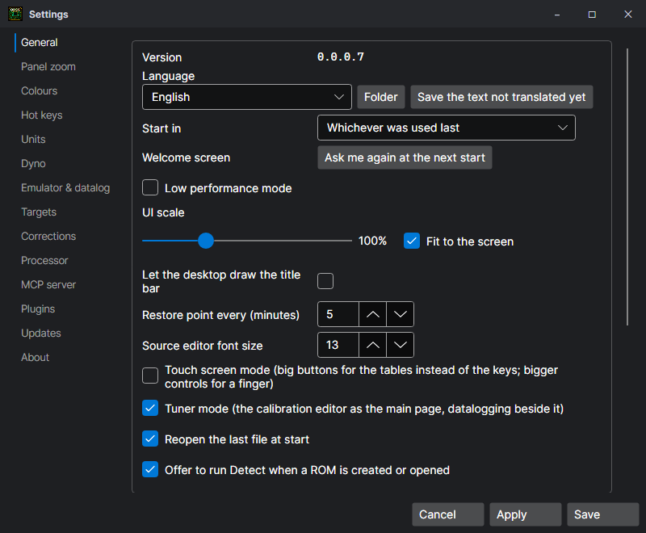
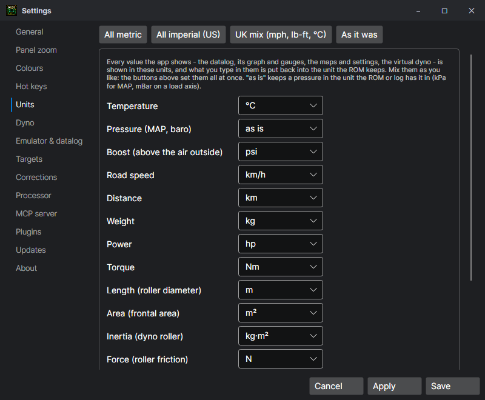
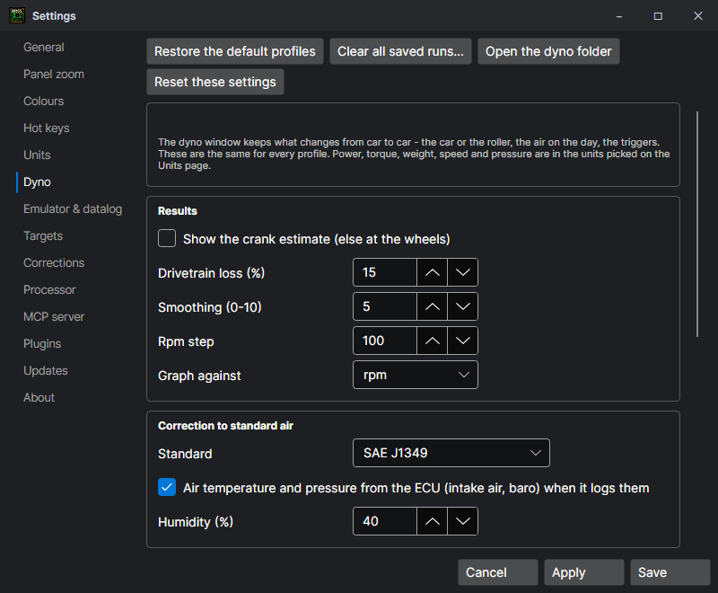

Settings
File > Settings (Ctrl+,). Every number is held to the range it can take.

| Page | Holds |
|---|---|
| General | The Language (and your own lang folder, and saving the text not translated yet), UI scale and fit to the screen, Low performance mode, the title bar, Touch screen mode, which mode it opens in and the welcome question, reopen the last file, offer Detect on open, auto save, the editor's font; Simulation: the speed, Fast boot, live trace on the maps, follow reads when stepping; table editing and the live cell's trail. |
| Panel zoom | Each panel's own zoom (set with Ctrl + mouse wheel), and putting them back. |
| Colours | The Theme: Dark (the default), Light, or High contrast for a laptop out in the sun (every window black and white, the colours at full strength); Ctrl+Shift+H goes round the three. The table colours, the source's colours and the live-cell marks. |
| Hot keys | Every key the program and the tables answer to — see Keyboard shortcuts. |
| Units | The unit for each kind of measurement, on its own: temperature, pressure (or as the ROM has it), boost, road speed, distance, weight, power, torque, length, area, inertia, force, mixture (AFR or lambda), injector flow and fuel volume. Buttons set all metric, all imperial (US) or the UK mix. Everything shown follows it, and what you type is put back in the unit the ROM keeps. |
| Dyno | The virtual dyno's results, correction, AFR source and hotkey; restore the default profiles; clear every saved run. |
| Emulator & datalog | The datalog's port, protocol and interval, how many frames to keep, Smoothing, driving the simulator with the car's readings, a wideband on its own port, aux channels; the Emulator's port and uploading changes as they are made; hit trace; serial timing (the pause between request and answer, DTR and RTS) and Reconnecting (the attempts and the gap between them). |
| Targets | The AFR wanted, low cam and high cam, on grids shaped like the fuel map. |
| Corrections | How a wideband's readings correct the fuel, and the analog input curves (a sensor's volts to its reading). |
| Processor | The chip being simulated: the MSM66207 (P28 / P30 boards) or the MSM66911 (P13 / P14), each with its own peripherals. |
| MCP server | The HTTP server for AI agents and other programs: on or off, the port, a password, remote connections, read-only. See MCP server. |
| Plugins | The plugin .dlls to load, and the guide to writing one. See Plugins. |
| Updates | What the website has that differs from what is here; check at start. |
| About | The version, the author, the website and the licence. |


Languages
The app is in English, Chinese, Spanish, French, Portuguese, Russian, Hungarian and German. Each language is a .json file in the lang folder beside the program, read when the app starts: English text on the left, its translation on the right. Anything not in the file stays English. To fix a translation or add a language, copy a file into your own lang folder (the Folder button beside the language), rename it and edit it; it is offered at the next start. With a language in use, Save the text not translated yet writes the English text seen on screen that has no translation, ready to fill in.